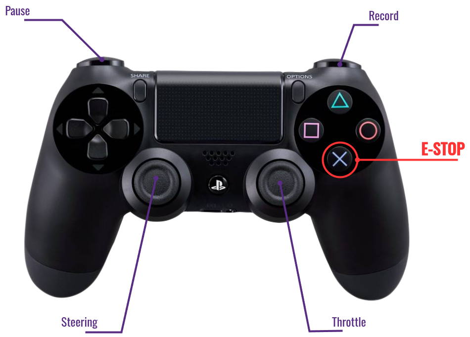
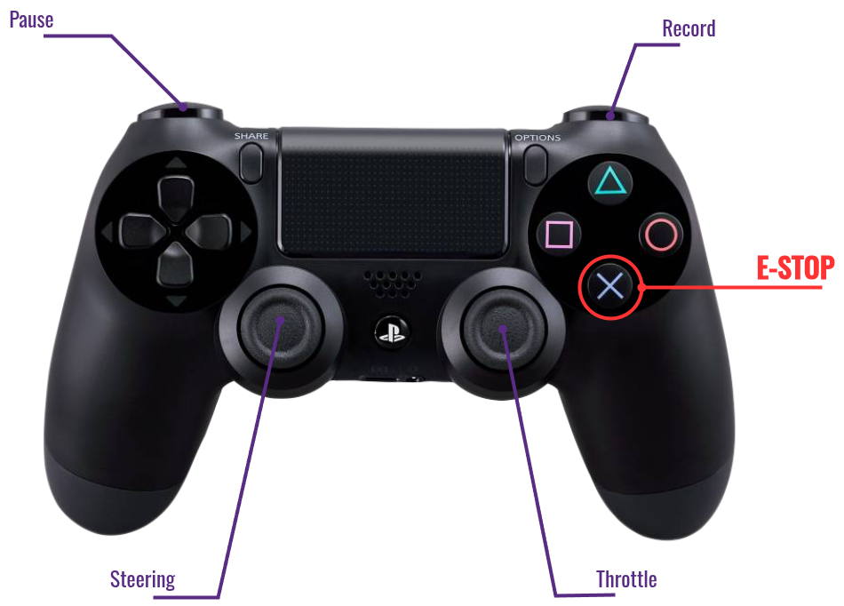

Gamepad Keymap
If you are using a Play Station like gamepad, the default keymap should be the same as shown in the image.

Otherwise, find index of interested buttons and joy axes using tests/gamepad.py
Bluetooth Connection
(To be continued...)
If you are using a Play Station like gamepad, the default keymap should be the same as shown in the image.

Otherwise, find index of interested buttons and joy axes using tests/gamepad.py
(To be continued...)